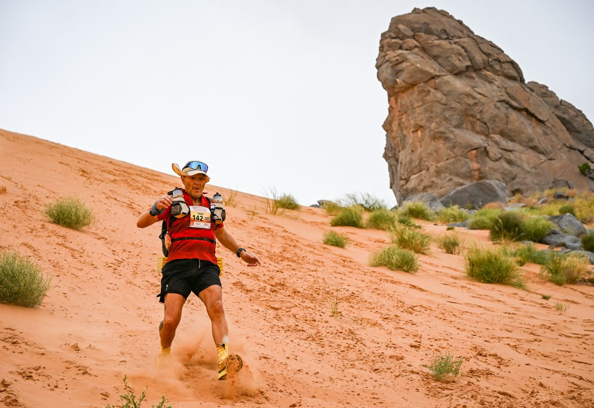
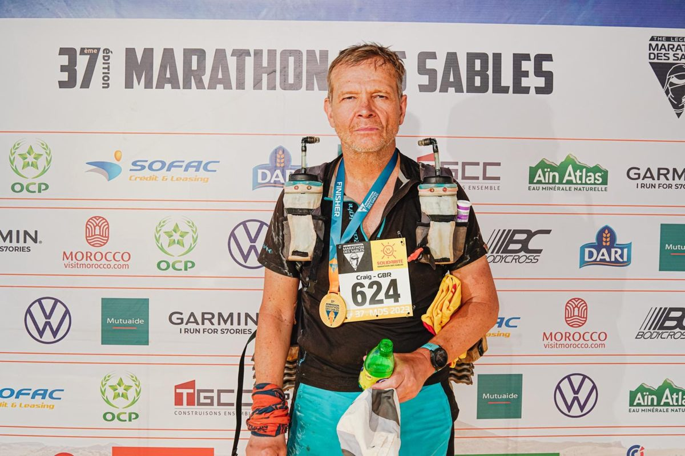
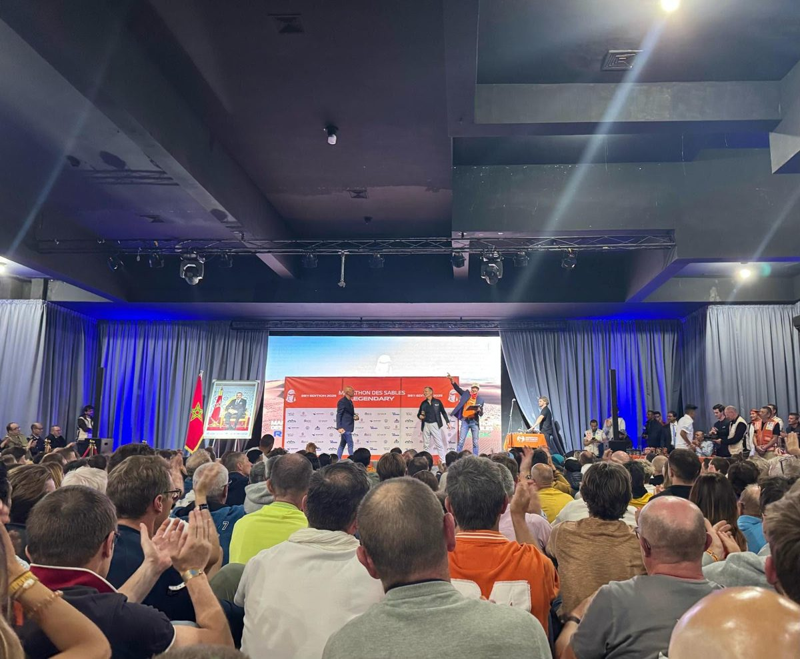

Fixing the work behind the work.
Twenty-five years rebuilding global accounts and relationships when trust had turned into pressure, delivery had drifted into legal dispute, and strategic ambition had collapsed into commercial frustration, then helping the people on both sides find a way back into confidence, growth and award-winning strategic partnership.
Twenty-five years rebuilding trust, now shipping the code.
Craig Horton is Amsterdam-based, with 25 years of enterprise leadership at HPE, Atos, Microsoft, Accenture, and Salesforce, working close to the point where technology, delivery, politics and commercial value all meet.
The work underneath that record has always been about more than selling the next platform or rescuing the next account, because the real issue is usually hidden in the operating model, the governance, the adoption path, the commercial tension, or the relationship that has become too transactional to grow. Craig does his best work in that messy middle, holding up the mirror, then helping teams move from pressure into trust and from trust into measurable value.
The current build cycle turns that experience into decision infrastructure for enterprise AI, through the Model Context Protocol, the Human-Agent Operating Model, the AI Business Value Framework, the Workflow Coroner, and The Transformation Brief. The thread across all of them is the same, AI transformation read through the lens of management, governance and behaviour.
See the workOxford and Hertfordshire.
- Global Executive MBA with Artificial Intelligence, University of Hertfordshire2026 to 2028, in progressAMBA-accredited, top 2 percent of business schools worldwide. Focus on integrating AI into executive decision-making and business strategy.
- Executive Leadership, Saïd Business School, University of Oxford2024, Distinction, 99,5 percentFocus on leading with empathy, resilience, and purpose at executive level.
- Also Anthropic AI Fluency certified, plus certifications from Databricks, IBM, Kotter, Andrew Sobel's Client Advisor Master Class, LBS, and IE Business School.
The distance between wanting to stop and finding one more step.
In 2014 my heart stopped for three minutes, while running at the beach. 30 months later I was at the start line of my 1st Marathon des Sables, 250 kilometres across the Sahara.
That was the first of six 250-kilometre desert ultras between 2016 and 2025. Four Marathon des Sables, two Ultra X Jordan. The one award that matters to me is the 2025 MDS Never Give Up Award, because that is what the whole thing has been about, refusing to stop.
I wrote the full story in my book, Die Another Day, published by Troubador. Read it here.
Frameworks can look clean on a slide and fall apart the moment they touch a real process, and then progress stalls, and then grinds to a halt. I have had the same moment at 200 kilometres into a desert, and keep moving forward is the discipline I try to bring to my work.



What senior leaders have said.
“Craig is a team player and an achiever. So much can be learned and reinvented, but it always starts with endurance, grit, and determination, which sets apart the achievers from the rest.”
“Craig was one of the most compelling and relevant account executives I have seen, with a unique ability to create and maintain relationships with C-level executives that I have rarely seen in my career.”
“Craig is simply a fantastic person to work with, high on values, high on pace, high on working together to unlock 10x results.”
“Craig's empathic ability to go one step further in understanding both corporate culture and individual needs ensures he delivers successful outcomes. A passionate advocate for a human-centric approach to technology.”